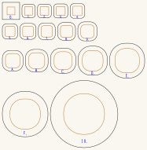

Trumpet parts
The bell and the mouthpiece: the generators that draw them, and the sheets that a trumpet cuts. Both are built on the 10 × 10mm channel — 16mm outside in 3mm Baltic birch plywood — so either fits any bore cut to it, today the switchback trumpet at 10mm.
They live here rather than inside one instrument because neither is changed by the shape of the bore. A trumpet is a mouthpiece, a length of tube and a bell; only the tube differs.
The 25mm parts were retired on 2026-09-03. Both generators still take --bore, so any channel can be cut from them, but the sheets kept here are the 10mm ones. The 25mm bores that used to take them — coiled, octagonal and the switchback's own 25mm folder — are unaffected as bores; they simply have no bell or mouthpiece cut for them here any more. Git has the old sheets if they are wanted back.
Millimetre-true at 1 user unit = 1mm, so everything prints and cuts at real size.
Built for LaserMadeMusic, where the cutting and the playing are shown.
The rest of the build files — every instrument, generator and tool, indexed.
Download the whole repository as a ZIP — the whole tree, not the parts alone; the bell and the mouthpiece are under parts/. GitHub builds it from main on every push, so it is never out of date.
 |
| bell/bell-round10-153mm-17rings-x3-rim86-cut-files.svg · 187.2 × 191.9mm sheet |
{kind=link}
What fits what
The bore is cylindrical — constant section end to end — and the only part of a trumpet that flares is the bell. That is why these two parts are interchangeable across bores:
| dimension | mates with | |
|---|---|---|
| Bore, air channel | 10mm square | the bell's 10mm throat and the mouthpiece's station one |
| Bore, end face | the 3mm ring between them | covered completely by the bell's flange and the mouthpiece's plate |
| Mouthpiece station one | 16mm square plate, 10mm square aperture | the end face of a 16mm-block bore |
The wall is 3mm either way, so the plate is always the channel plus 6mm. That one line is the whole of what --bore changes.
The two sheets
mouthpiece-bore10-trumpet-parts-cut-files.svg and bell-round10-153mm-17rings-x3-rim86-cut-files.svg — a mouthpiece and a bell for a 10mm bore on a 16mm block.
{kind=link}
Both generators take --bore, which sets the air channel and the plate around it — the channel plus a 3mm wall each side — and nothing else. The ply is still 3mm and a ring still rises 3mm; that part genuinely cannot be scaled, which is why a bell for a small bore is not a small bell.
bell.py and mouthpiece.py do not take --bore. Only the square-to-round pair does, because those are the two anything new is cut from.
The mouthpiece
python3 mouthpiece-round.py --bore=10 --rim=17 --layout=trumpet30 rings, 90mm stacked: a sharp 10mm square aperture in a 16mm square plate at station one, rounding to a true circle by station 3, only 6mm up, because a 10mm square has that little corner to lose. Then a 26-ring, 75mm backbore down to the standard ø3.66 throat, and a four-ring bowl out to a ø17mm rim.
The throat does not follow the bore. ø3.66 is a #27 drill and a real trumpet throat; a mouthpiece is sized by the lip at one end and the drill at the other, not by the tube it feeds. --rim=17 is the inside of the rim, where the lip sits, and 16 to 17mm is where a trumpet lives — so this mouthpiece is full size on a quarter-size instrument, which is the point of it.
--layout=trumpet because this is a new part: it spends its length on the backbore and keeps a 12mm cup, which is how a real mouthpiece is proportioned. The legacy layout is kept only for the one that has already been glued.
The bell
python3 bell-round.py --bore=10 --length=152 --mouth=80A 10mm square throat opening to ø80 of air over 152mm, flange ø10 in a ø22 square, covering the bore's 10–16 end face 3mm proud. Drop the ring budget and you get four lamination schedules of the same bell; the 17-ring is the one that was kept, 17 × 3 ply for a 153mm stack off a 187 × 192mm sheet in 3 passes. 152 divides by neither 3 nor 9, so every schedule overshoots a little and the stack lands at 153mm; asking for 153 in the first place would have divided evenly by both.
--mouth is the hole, --rim is not
This is the trap the option exists to close. --rim is the square bell's width at the rim, which the area law then opens out by 2/√π once the section is a circle — so --rim=80 delivers a ø90.3 hole, not an 80mm one. --mouth=80 inverts that and gives you 80.
Beside it, the outer diameter is another 6mm larger again, because the rim ring carries the 3mm lap each side: this bell is ø80.0 of air inside a ø86.0 rim. The section line now prints both, and the README's "Rim diameter" column has always been the outer one.
See them built
Every sheet has two pictures. Turn it is a solid you can drag; the isometric is one fixed view, better for a page. Both are drawn from the cut file's own ring sizes, so neither can drift from what gets cut.
| Part | Rings | Height | ||
|---|---|---|---|---|
mouthpiece-bore10-trumpet-parts | 30 | 90.0mm | turn it | isometric |
bell-round10-153mm-17rings-x3-rim86 | 17 | 153.0mm | turn it | isometric |
{kind=link}
{kind=link}
part-view.py writes the turnable pages and bell-view.py / mouthpiece-view.py the isometrics. All three read the ring sizes with the same sections().
Colour is the cut order
Blue engraves, then green -> orange -> cyan -> black, with black always the cut that frees the part and violet always skip. That sequence is shared by every LaserMadeMusic repository.
Every bell and mouthpiece sheet here uses three of those stages. Blue engraves the ring numbers, orange cuts each ring's aperture, and black cuts the outlines and frees the parts. The aperture and the outline used to be one path in one colour, which left a per-colour job free to cut an outline first and drop a ring before its hole was in. Holes before rims, and the file now says so rather than relying on the order paths happen to be written in.
A nested sheet needs more than that. Where a small ring sits inside a big one's aperture, the small one has to be cut first or it is freed along with the waste it sits in, and one black stage cannot say so. ramp_bell.py answers that with a black → red ramp, one stage per ring by size, so the cut runs smallest first. None of the sheets here are nested today, so all of them cut in a single black stage with their numbers in blue. Give a ramped sheet an explicit operation per colour — a per-colour job silently skips any colour left unmapped.
Before you cut
Cut these in 3mm Baltic birch plywood. Ring thickness is ply thickness here: a bell ring rises 3mm because the sheet is 3mm, and the mouthpiece stacks 23 rings into 69mm the same way. Substituting 4mm stock does not scale the design, it breaks the profile.
Check an edited sheet with verify_bell.py rather than diffing path data — once paths have been through an editor and converted to curves, a byte diff says nothing.
Files
The bell, in bell/ — bell-round10-153mm-17rings-x3-rim86-cut-files.svg, generated by bell-round.py, which checks its own sheets rather than leaving it to verify_bell.py, and numbers their rings itself. ramp_bell.py applies the cut-order colour, and verify_bell.py checks an edited sheet for ring sizes, the lap it states, nesting order and overlapping cuts.
bell.py is still here and still writes a square-section bell on demand; no sheet from it is kept.
Each number carries an orientation tick. A ring is a circle and has no top, so a number alone is ambiguous: turned over, a 3 reads as an E and a 6 reads as a 9. A short mark on the baseline, right of the last character, says which way up the label was engraved — the same convention as a seven-segment display's decimal point, or the underlined 6 and 9 on dice. --mark=no writes a label without one.
The mouthpiece, in mouthpiece/ — mouthpiece-bore10-trumpet-parts-cut-files.svg, generated by mouthpiece-round.py, which checks every joint in both directions before it writes, and engraves each ring's number itself by calling bell/number_rings.py --order=document as its last step. --numbers=no writes a bare sheet; a numbering failure deletes the sheet rather than leaving an unnumbered one to be cut. mouthpiece.py and mouthpiece-cup.py are kept and write on demand; no sheet from either is.
Display only, never cut — the axial sections bell-round10-153mm-17rings-x3-rim86-section.svg and mouthpiece-bore10-trumpet-parts-section.svg, drawn by bell-section.py; the isometrics bell-round10-153mm-17rings-x3-rim86-view.svg and mouthpiece-bore10-trumpet-parts-view.svg, from bell-view.py and mouthpiece-view.py; and the turnable pages bell-round10-153mm-17rings-x3-rim86-turn.html and mouthpiece-bore10-trumpet-parts-turn.html, from part-view.py.
Released under CC0 1.0.